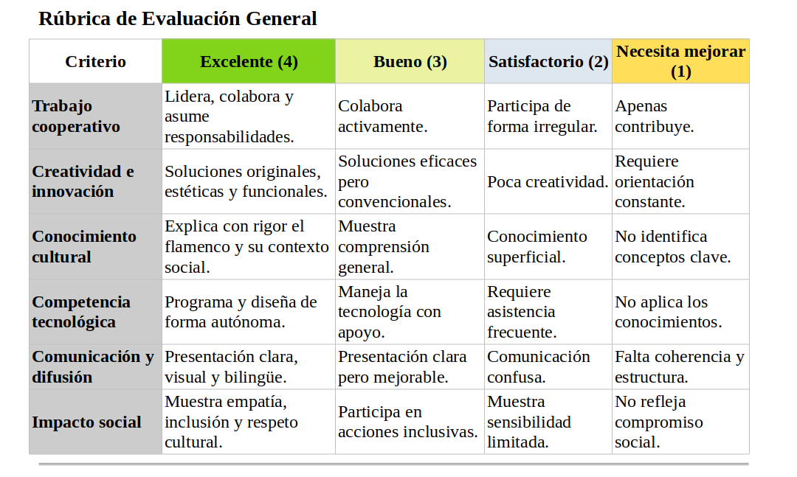

Arduino y Gestión de componentes:
- Planificación del prototipo: diseño de la caja, elección de componentes y desarrollo de la app.
- Creación de prototipos de baja fidelidad (como bocetos o maquetas de cartón) para la caja y la app.
- Definición de los materiales y herramientas necesarios para el prototipo.
Usa esta plataforma para diseñar el prototipo e impleméntalo luego.
Experimentación (Construcción y Pruebas Iniciales)
Durante la fase de experimentación, se deberán realizar las siguientes actividades:
Pruebas del prototipo: Los estudiantes deben probar cómo interactúan los diferentes elementos (app, caja, miniservos, LED y zumbador) y realizar ajustes necesarios.
Revisión de las composiciones poéticas y bailes: Ensayo de las coreografías y ensayos de las composiciones poéticas.
Feedback y ajustes: Después de las pruebas, se realizará una retroalimentación entre los grupos para mejorar los prototipos y las presentaciones.
Análisis de Datos y Resultados
Al final del proyecto, los estudiantes analizarán los resultados del concurso (quién ganó, las respuestas correctas, la reacción del público) y reflexionarán sobre lo aprendido. Se utilizarán encuestas para evaluar el impacto de la actividad en el conocimiento del flamenco y la integración social.
Nuestro chatbot
El chatbot puede ser creado para interactuar con los usuarios y responder preguntas sobre el flamenco. El chatbot podría funcionar como recurso educativo para que los estudiantes y el público general aprendan sobre el tema. Machine Learning permitirá que el chatbot se vuelva más preciso en las respuestas conforme más usuarios interactúan con él.
Actividad: Preparamos nuestro chatbot con IA para que responda a las preguntas de las personas interesadas en el proyecto. Podemos usar como modelo el que te dejo en archivos adjuntos y adaptarlo a este proyecto.
Solución: Añadiremos al modelo inicial varias etiquetas relacionadas con el trabajo de investigación realizado anteriormente y, al menos, 10 expresiones en cada una de ellas. Debemos añadir estas etiquetas al programa en Scratch con las correspondientes respuestas asociadas. Fijaos bien en la estructura del programa y copiar su formato para introducir las nuevas variantes.
File Attachments
Rúbrica de Evaluación
Rúbrica general del proyecto
